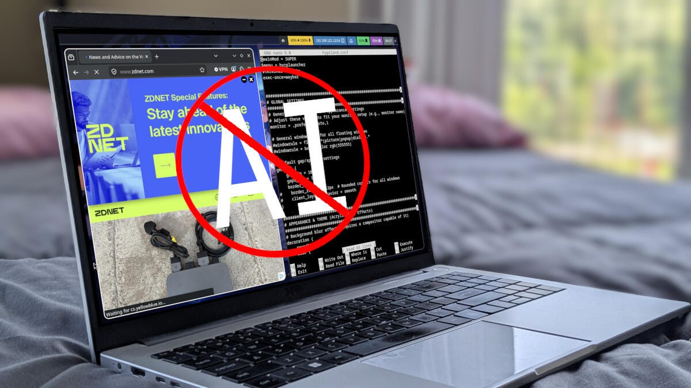

Debian、Void、MXLinux、Arch、Slackware、AerynOS——Jack Wallen 精選六款明確拒絕 AI 整合的 Linux 發行版，反映開源社群的另類聲音

ZDNET 資深作者 Jack Wallen 精選六款明確拒絕或極不可能整合 AI 的 Linux 發行版，反映開源社群對 AI 技術無節制滲透的反思與抵抗——用户仍可自行安裝，但系統核心不會預設 AI。
Debian 開發者明確表態，理由是 LLM 的開放性不符 DFSG（Debian 自由軟件指南）合規要求，並在 2025 年投票聲明：不符許可條件的 AI 模型不被視為 DFSG 合規。作為「發行版之母」，其立場影響深遠。
Void Linux 從最小系統出發，ISO 體積極致輕量化。DIY 本質與極簡主義設計，決定了 AI 不可能成為基礎系統的一部分。
MXLinux 建基於為老舊硬體設計的 AntiX，本身就是為節省資源而生，自然不可能整合資源消耗大的本地 AI，開發社群亦堅守自由軟件精神。
Arch Linux 對 AI 持謹慎態度：LLM 屢次突破安全限制，加上 Arch 滾動發行版演進緩慢的核心特徵，使其不可能跳上 AI 預裝的列車。
「不可能。絕對不可能。」Slackware 一直專注於成為「最 UNIX-like 的 Linux 發行版」，這意味著它永遠不會預裝 AI。
AerynOS 開發者發表明確聲明：「AerynOS 默認不接受在 AerynOS 內外使用 LLM。」立場基於數據收集倫理、資源消耗、潛在負面影響及版權侵犯等問題。
這些發行版並非完全排斥 AI——用戶仍可自行安裝。他們反對的是將 AI 強加於作業系統核心，與 Microsoft/Apple 全力押注 AI 的策略形成鮮明對比。
「Not every Linux distribution has plans to add AI into the mix. Fortunately, not every one of these distro developers has made public statements about not including AI, but their foundations and ethos stand against such things.」
— Jack Wallen, ZDNET在 AI 無處不在的趨勢下，這些「堅守清流」的發行版提供了一種另類聲音。他們的存在證明，開源世界並非一面倒向 AI 整合，開發者 ethos 與使用者選擇仍然重要。對於注重隱私、自由軟件精神或對 AI 持保留態度的用户，這六款發行版提供了有意義的選擇。
| 發行版 | 反 AI 原因 | 立場明確程度 |
|---|---|---|
| Debian | DFSG 合規要求 | ✅ 官方明確聲明 |
| Void Linux | DIY + 極簡主義 ethos | 🔹 推斷成立 |
| MXLinux | 資源節省 + FSF 精神 | 🔹 推斷成立 |
| Arch Linux | 安全考量 + 演進緩慢 | 🔹 推斷成立 |
| Slackware | UNIX-like 哲學 | ✅ 明確否決 |
| AerynOS | 倫理、資源、版權問題 | ✅ 官方明確聲明 |